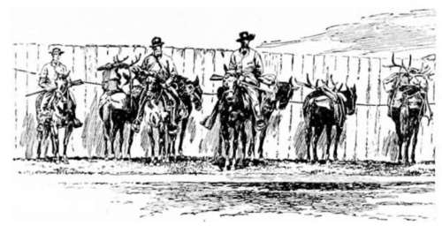
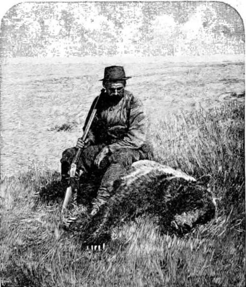

Camping And Hunting In The Shoshone. Part 2
Description
This section is from the book "Hunting", by Archibald Rogers. Also available from Amazon: Hunting.
Camping And Hunting In The Shoshone. Part 2
"O that a man would arise in me, That the man I am might cease to be! " for he does not want the man he feels he is to cease to be. The man he now is he could afford to go on with forever; for he is a good-natured chap, who never did, or never will do, an unkinder thing to anyone than to laugh at him when he gets into a scrape. Every day be can walk farther and eat more. His shoulder does not ache as it did to the steady pressure of his rifle. Somehow the ground up in the mountains does not seem as hard as it used to be those first few nights on the plains, after he left the railroad, and when, hunt as he would, he could not find a square inch of anything softer than a flint on which to repose his weary hips. And now that he is in permanent camp, and the boys have time to chop up and lay under his waterproof great armfuls of the sweet-smelling mountain pine-tops, no spring-mattress ever afforded delights comparable to those his couch yields to him.
From six weeks of such living one returns to his work a new man, —his muscles set, his eye clear, and his hand as steady as his appetite, —thankful for the good time he has had, and thankful, doubly thankful, for the home and friends, or perhaps wife and children, that make the thought of return again so sweet.
The Outfit.
As to scenery, there is a grandness, a loneliness, a majesty, about the views in the Rocky Mountains that cannot be surpassed. Here you have not snow to the same extent as in Switzerland; though I have seen a snow-field fully fifteen miles long and ten broad, and no one can guess how many hundred or thousand feet deep, in the almost unexplored granite range that lies between Clarke's Fork Mines and the Northern Pacific Railroad. But the rocky scenery is wonderful, —wonderful in form, wonderful in color, and wonderful in size. The very solid earth seems sometimes to gape asunder; as you enter some canon you can scarcely persuade yourself you are ascending, since the mighty walls of rock on either hand so lean over to each other that it seems as though the path led downward, and not, as it does, upward. One of the finest bits of rocky scenery I remember to have seen anywhere is within three days' easy ride of the Northern Pacific Railroad, and on the road to Cooke City Mines. A long valley of some twenty-four miles leads easily up to the divide, from the East Fork of the Yellowstone, narrowing as it rises. Some seven or eight miles from Cooke, on the left as you ascend, a vast wall of basalt rises almost sheer from the bed of the stream.
His first Grizzly.
It cannot be less than three thousand five hundred feet in height, and, I should fancy, is over a mile along its base. When I first looked up at it, its great dark breast was braided all over with a hundred milky, wavy, flashing waterfalls. For a week we had almost continuous rain; and these warm showers, for it was July, had hastened the destruction of the snow-beds on its crown, and down to the valley fell or trickled, literally, hundreds of streams, separating, spreading, uniting, and spreading again, as they crept or thundered downward. No words can convey any idea of the mingled beauty and grandeur of falling water and immovable basalt when smitten by the glory of the setting sun. One autumn evening, two years after, we camped at the same spot. We were smoking the last pipe of peace before turning in, when one of our party noticed a clear light falling on the summit above us. As we watched, the light crept slowly downward; at first we scarcely realized that it was the moon. We were down, remember, in a veritable chasm, one side of which—the side before us — was about three thousand feet higher than the other; and thus the moonbeams lit up its edge long before they touched the little prairie at its feet, where our camp lay. A great belt of clouds lay on the rocky ridge at our back; and athwart these the moonlight passed, casting their moving shadows on the great gray mirror we were looking up at. What grotesque shapes they took, as they wound and unwound their long folds! There we sat and watched them, until at last such moonlight as you can only see when you are almost seven thousand feet above the damper, denser air in which ordinary life is to be sustained, fell full into the gorge.
I recall, too, another bit of rocky scenery as unlike this one I have tried to sketch as I can well fancy is possible; and I single it out of a possible score of such places because it, like the first, is accessible to ordinary travellers, — the mouth of Clarke's Fork Canon. Clarke's Fork River rushes to the plains through one of the grandest canons in the Rocky Mountains. For fifteen miles an old and difficult hunter's trail leads down its precipitous sides; but this is not much used at present, such travel as does find its way to Cooke City Mines from the eastward going over the long, but comparatively easy, ascent of Dead Indian Mountain. At a first glance, the river-gorge is absolutely impassable; a sentinel-cliff seems to guard its mountain solitudes, and bar all human progress upward. I have heard my hunter say that, when trout-fishing in one of the deepest spots in that canon, he saw clearly the stars at mid-day; and I believe it, for even where the steep trail passes — and it passes at a considerable height above the torrent, and so avoids the deepest gloom — it is murky enough.
But the view of the rocky gateway to this chasm is alone worth a journey, and of it I wish to speak. Sheer from the water, without one break on its face, a silvery cliff, looking almost south, rises five thousand feet into the sky. I do not know, I am ashamed to say, the nature of the formation; but in the sunlight its sheen is most silvery. Opposite it stands a mountain so rocky and precipitous that no man or beast can ascend it; here and there belted with pine, and as dark as its brother-sentinel is fair. I saw these one early morning in September, when we had turned unwillingly homeward, resisting the strong temptation of a first tracking snow; saw them all crusted and crowned with their first winter icing. As we rode, we were not a mile from their bases, yet these were absolutely invisible, shut out by a solid wall of dense white cloud; but their heads, for the topmost thousand feet or so, were as clear as sunlight could make them.
Continue to:
- prev: Camping And Hunting In The Shoshone
- Table of Contents
- next: Camping And Hunting In The Shoshone. Part 3